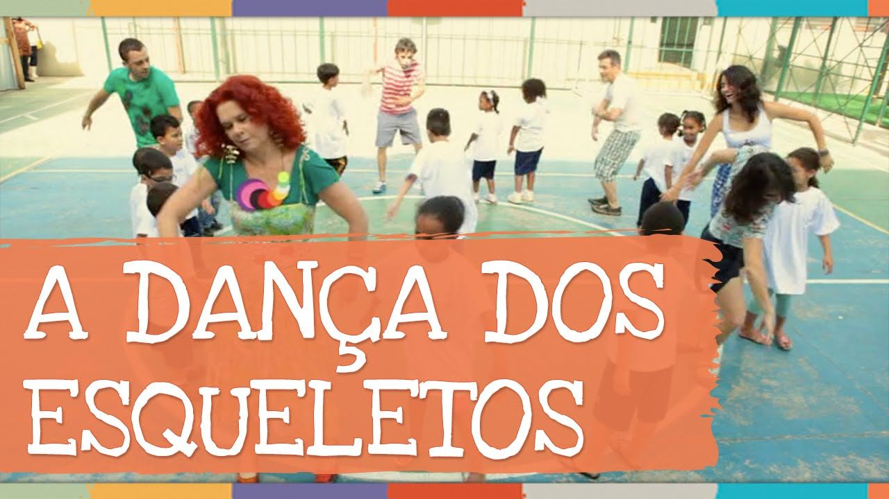
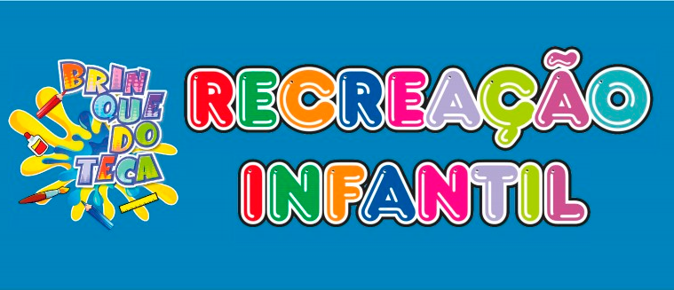

A partir de 3 anos de idade.
Aulas do método Royal Academy of Dance (Inglaterra)e metodologia própria desenvolvida com exclusividade para cada turma. Por meio de projetos anuais, trabalhamos conteúdos de ballet,história da dança, musicalidade e expressão artística para os pequenos relacionarem-se afetivamente com seu corpo e as incontáveis possibilidades de expressão no tempo e no espaço.

A intenção desta aula é apresentar para as crianças as cores primárias, onde mostraremos as cores primárias e explicaremos o porquê elas são chamadas desta forma.
Explicaremos que o amarelo, o vermelho e o azul são chamadas de cores primárias, porque são com elas que formamos outras cores.

A iniciação musical e dança na Educação Infantil e nas séries iniciais do Fundamental estimula áreas do cérebro da criança que vão beneficiar o desenvolvimento.

Atividades de lazer serve para relaxar, gastar energia e aprendizado e ter boa relação entre o convivio das criancas.